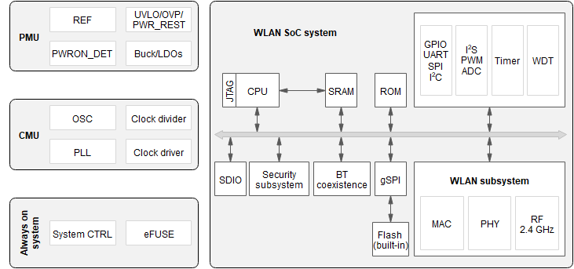

Introduction to the Hi3861 Development Board¶
This document describes how to quickly start with the Hi3861 WLAN module, including the development environment setup, version compiling and building, device burning, source code modification, debugging and verification. Following this guide, you can start developing services with the basic understanding of the Hi3861 WLAN module.
Hi3861¶
The Hi3861 WLAN module is a development board with 2 x 5 cm form factor. It contains a 2.4 GHz WLAN SoC that highly integrates the IEEE 802.11b/g/n baseband and radio frequency (RF) circuit. This module provides open and easy-to-use development and debugging environments for running OpenHarmony.
The Hi3861 WLAN module can also be connected to the Hi3861 mother board to expand its peripheral capabilities. The following figure shows the Hi3861 mother board.
The RF circuit includes modules such as the power amplifier (PA), low noise amplifier (LNA), RF Balun, antenna switch, and power management. It supports a standard bandwidth of 20 MHz and a narrow bandwidth of 5 MHz or 10 MHz, and provides a maximum rate of 72.2 Mbit/s at the physical layer.
The Hi3861 WLAN baseband supports the orthogonal frequency division multiplexing (OFDM) technology and is backward compatible with the direct sequence spread spectrum (DSSS) and complementary code keying (CCK) technologies. In addition, the Hi3861 WLAN baseband supports various data rates specified in the IEEE 802.11 b/g/n protocol.
The Hi3861 chip integrates the high-performance 32-bit microprocessor, hardware security engine, and various peripheral interfaces. The peripheral interfaces include the Synchronous Peripheral Interface (SPI), Universal Asynchronous Receiver & Transmitter (UART), the Inter Integrated Circuit (I2C), Pulse Width Modulation (PWM), General Purpose Input/Output (GPIO) interface, and Analog to Digital Converter (ADC). The Hi3861 chip also supports the high-speed Secure Digital Input/Output (SDIO) 2.0 interface, with a maximum clock frequency of 50 MHz. This chip has a built-in static random access memory (SRAM) and flash memory, so that programs can run independently or run from a flash drive.
The Hi3861 chip applies to Internet of Things (IoT) devices such as smart home appliances.
Figure 3 Hi3861 functions

Resources and Constraints¶
As the Hi3861 only offers 2 MB Flash and 352 KB RAM, use them efficiently when compiling code.
Development Board Specifications¶
Table 1 Hi3861 WLAN module specifications
Type | Description |
|---|---|
General specifications |
|
PHY features |
|
MAC features |
|
CPU subsystem |
|
Peripheral interfaces |
|
Other information |
|
Key Features¶
OpenHarmony provides a series of available capabilities based on the Hi3861 platform. The following table describes the available key components.
Table 2 Key components
Component | Description |
|---|---|
wlan | Provides WLAN service, such as connecting to or disconnecting from a station or hotspot, and querying the state of a station or hotspot. |
iot controller | Provides the capability of operating peripherals, including the I2C, I2S, ADC, UART, SPI, SDIO, GPIO, PWM and FLASH. |
soft bus | Provides the capabilities of device discovery and data transmission in the distributed network. |
hichainsdk | Provides the capability of securely transferring data between devices when they are interconnected. |
huks | Provides capabilities of key management, encryption, and decryption. |
system ability manager | Provides a unified OpenHarmony service development framework based on the service-oriented architecture. |
bootstrap | Provides the entry identifier for starting a system service. When the system service management is started, the function identified by bootstrap is called to start a system service. |
syspara | Provides capabilities of obtaining and setting system attributes. |
utils | Provides basic and public capabilities, such as file operations and key-value (KV) storage management. |
DFX | Provides the DFX capabilities, such as logging and printing. |
XTS | Provides a set of OpenHarmony certification test suites. |